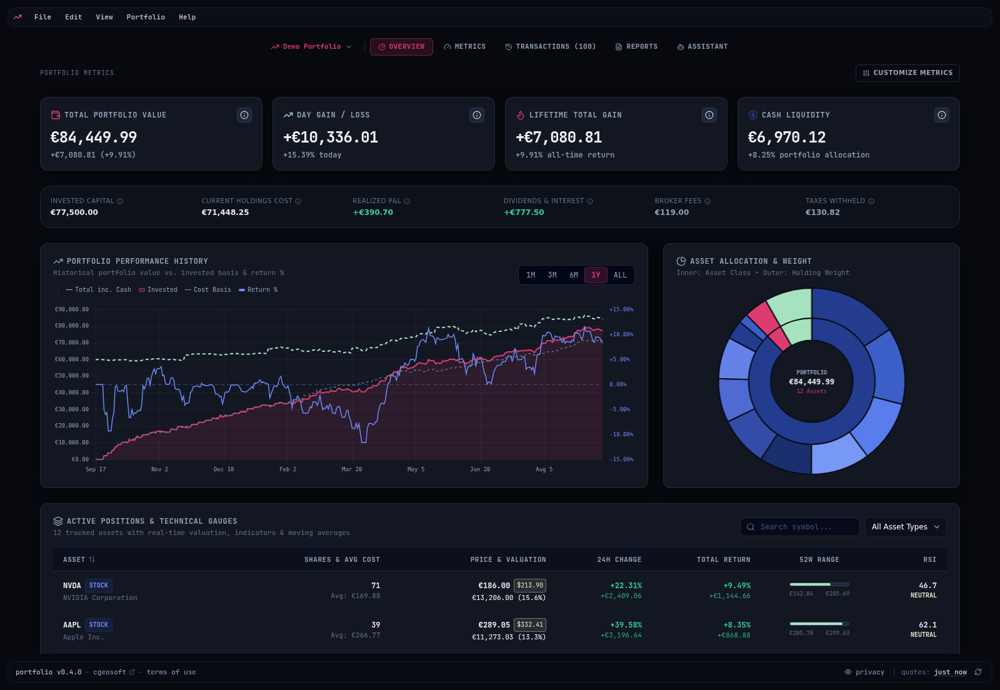

Runs on your own computer
Your holdings, cash reserves and transaction history stay on your computer in a private local database. No login, no cloud database and no third party tracking your assets.
Portfolio is a personal investment tracker that keeps your holdings, cash and transaction history in one file on your own disk. Live market valuation, broker CSV import and on-demand AI briefings, all running privately on your computer. No account to create, no cloud database, no one reading along.
sudo dpkg -i portfolio_<version>_amd64.deb
A real screenshot of the running app with a demo portfolio, not a mockup. Hover the markers to see what every part of the overview does.

Generate a markdown analysis of your portfolio with a local model (Ollama, llama.cpp) or a cloud provider. You choose which, and you can read the exact prompt first.
Every card comes from the Metrics Marketplace. Pick which ones appear, per portfolio, and whether each is a large card or a compact tile.
Invested capital, realized P&L, dividends and interest, broker fees and withheld taxes, all derived locally from your own transactions.
Total value including cash, invested value, cost basis and return %, plotted from 1M to all-time out of local daily snapshots.
The inner ring splits your portfolio by asset class, the outer ring by individual holding weight, so concentration is impossible to miss.
Every holding with its live price, 24h move, total return, 52-week range and RSI, plus SMA 50/200 trend, refreshed from Yahoo Finance.
Hover a marker to see what each part of the dashboard does • click the screenshot to view it full size. Tap the screenshot to view it full size.
Your holdings, cash reserves and transaction history stay on your computer in a private local database. No login, no cloud database and no third party tracking your assets.
Stock, ETF and crypto quotes come straight from Yahoo Finance. Exchange rates are applied automatically so your whole portfolio is valued in your base currency.
Ask for a written analysis of risk, allocation and rebalancing. Use a local model (Ollama, llama.cpp) for fully private processing, or your own API key for Groq, Anthropic, OpenAI or Gemini.
Import hundreds of transactions in seconds. Trade Republic, Scalable Capital, Interactive Brokers and Degiro exports are recognised automatically, with duplicate detection and a dry-run preview.
SMA 50 and SMA 200 moving averages, 14-day RSI, 52-week high and low bands, dividend income, withheld taxes and the drag of transaction fees, all calculated on your computer.
A native desktop application that starts in a moment, uses little memory and runs smoothly on an ordinary computer. Metrics are small sandboxed modules you pick from the marketplace.
One installer, nothing else to set up. On first launch the app creates its data file on your disk. No account, no sign-in, no API key for market data.
Import the CSV export from your broker (Trade Republic, Scalable Capital, Interactive Brokers, Degiro or a generic file) or enter transactions by hand. Quotes and exchange rates are fetched from Yahoo Finance.
Watch value, cost basis and indicators update on the overview. Optionally point the app at a local model or your own API key and ask for a written briefing whenever you want one.
Every installer is built from the public source code on GitHub.
Windows 10 or 11, 64-bit
Installer (.exe) Portable (.zip)Apple Silicon and Intel, macOS 12+
Disk image (.dmg) Archive (.zip)Debian, Ubuntu and derivatives, x64
Package (.deb) Archive (.tar.gz)Every version is published on GitHub. Older versions stay available to download.
In one database file on your computer. There are no external servers, no cloud database and no account. Back it up by copying that file.
The app talks to Yahoo Finance directly from your computer to fetch current prices, intraday moves and exchange rates. Your holdings and portfolio values are never sent anywhere; only the ticker symbols you look up leave your machine.
You choose the model. Run fully offline with a local runtime such as Ollama or llama.cpp, or supply your own API key for a cloud provider (Groq, OpenAI, Anthropic, Gemini, OpenRouter or DeepSeek). The app sends the request straight to the provider you picked; nothing goes through a server of ours.
The import wizard recognises Trade Republic, Scalable Capital, Interactive Brokers (Activity Statement CSV) and Degiro (Account CSV) exports automatically, and accepts a generic transaction CSV for anything else. Imports are previewed as a dry run before anything is written.
Yes. Portfolio is free and open source under the MIT License. There is no subscription and no limit on the size of your portfolio.
The download buttons on this site always give you the latest release. Every earlier version, together with its release notes, stays available on the GitHub releases page.